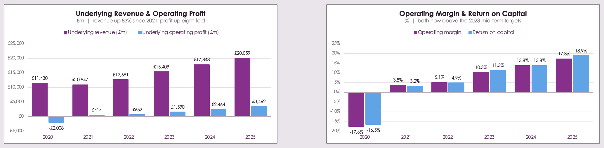

Rolls-Royce Holdings plc
FY2020 – FY2025
FY2020 – FY2025
Rolls-Royce Financial Performance Analysis
Post-pandemic turnaround of Rolls-Royce Holdings plc, analysed from its 2020–2025 annual reports, with a five-year operating profit forecast.
- Operating margin moved from -17.6% (2020) to 17.3% (2025)
- Balance sheet swung from £5.2bn net debt to £1.9bn net cash
- Interactive dashboard with three forecast scenarios vs guidance